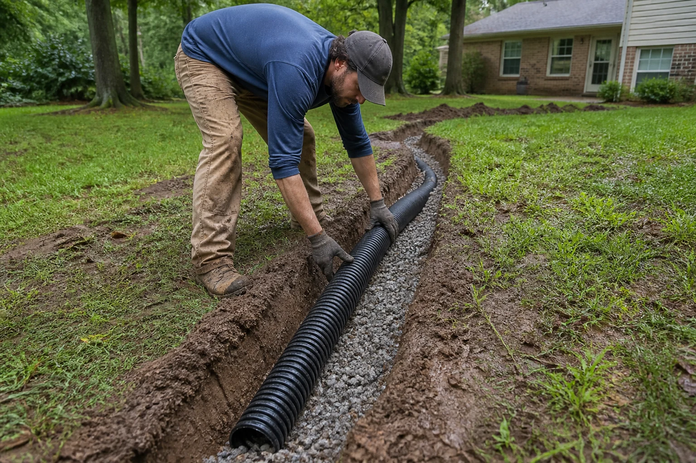
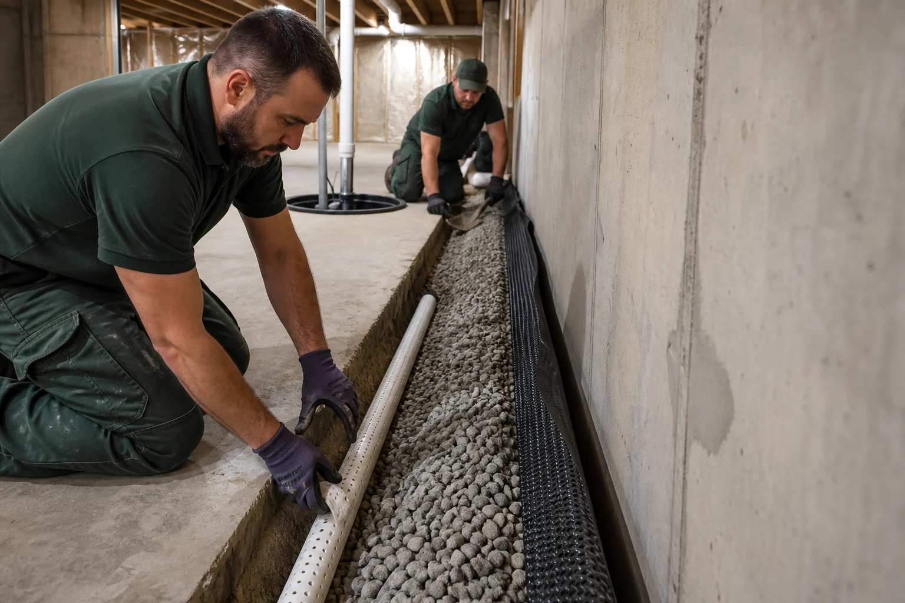
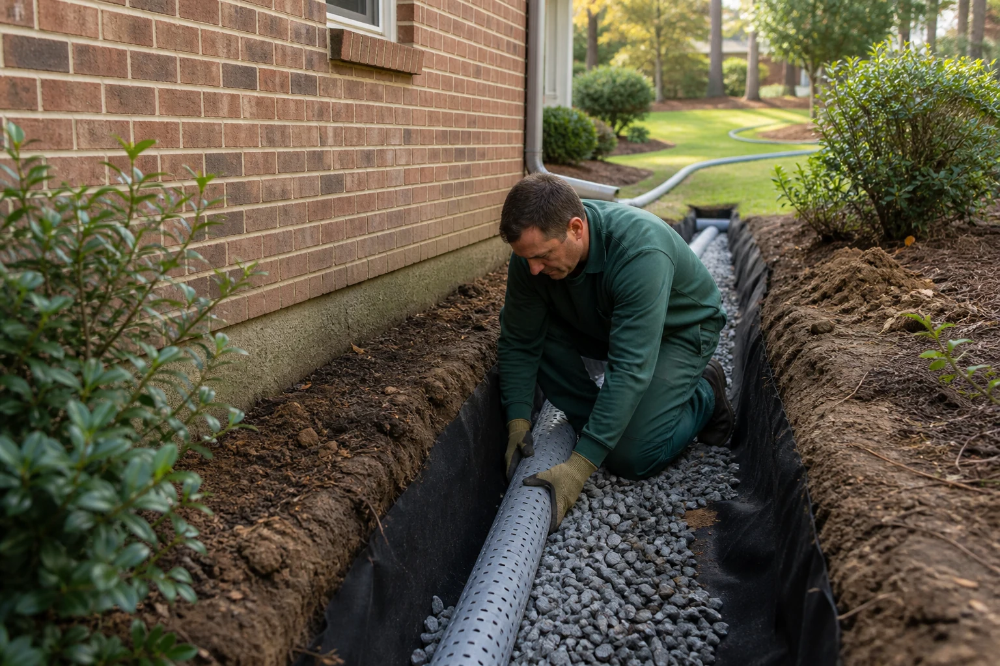
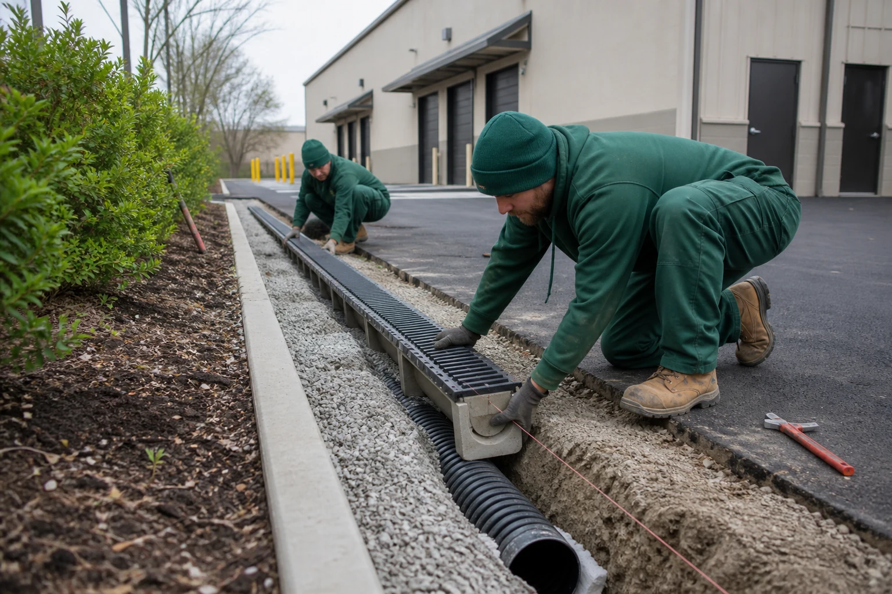
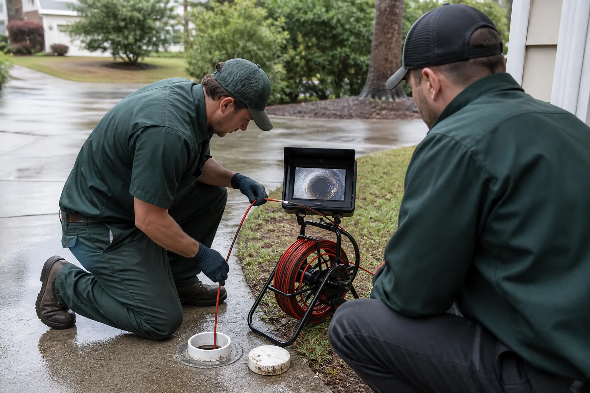
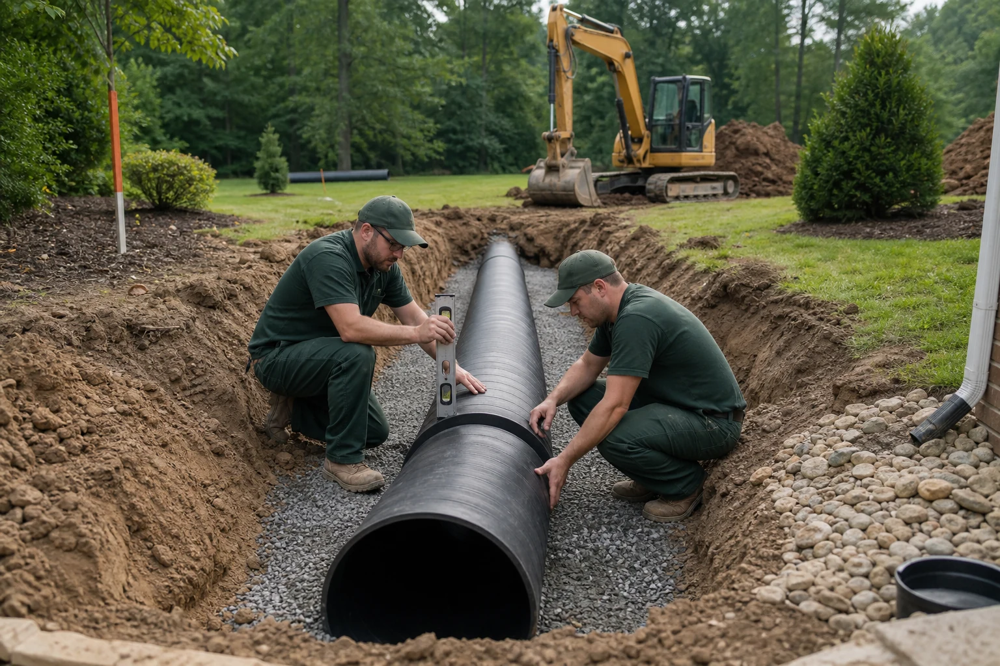

Built around your property
Drainage Services
One licensed crew, every drainage problem handled. Explore the options below and call for a free written estimate.
Complete Outdoor Drainage Solutions
We diagnose the source of the water, design the correct path away, and install a system sized for the property.
Yard Drainage
French drains, catch basins, grading, and emitters for standing water.
Explore service →Internal French Drain
Perimeter drainage that directs groundwater toward a sump system.
Explore service →Exterior French Drain
Foundation-side drainage that intercepts water outside the structure.
Explore service →Commercial French Drain
Engineered systems for large sites, parking areas, and facilities.
Explore service →Drain Inspections
Find the blockage, failure, or grading issue before choosing a repair.
Explore service →Storm Pipe Installation
Solid-wall pipe for roof runoff, sump discharge, and surface water.
Explore service →
Dry, usable lawns
Yard Drainage
From subsurface French drains to catch basins and pop-up emitters, we engineer yard drainage systems that pull water out of saturated soil and route it safely away.
- Standing-water correction
- French drain networks
- Catch basins and emitters
- Drainage-aware grading

Control groundwater pressure
Internal French Drain
Interior perimeter drain tile installed beneath the basement floor relieves hydrostatic pressure and channels groundwater to a sump pump before it reaches walls or floors.
- Basement perimeter drainage
- Crawlspace water control
- Sump-directed collection
- Discharge-line planning

Stop water outside
Exterior French Drain
A gravel-wrapped perforated pipe installed around the foundation intercepts groundwater and surface runoff, then discharges it well away from the structure.
- Foundation protection
- Downspout integration
- Filtered aggregate trench
- Safe outlet placement

Built for larger sites
Commercial French Drain
We design and install commercial-grade French drains, trench drains, and storm pipe networks for property managers, builders, warehouses, and business owners.
- Large-volume drainage
- Parking and hardscape runoff
- Property-wide pipe networks
- Phased site planning

Diagnose before repair
Drain Inspections
Before you spend money on repairs, we inspect drain lines, downspouts, grading, and discharge points to identify exactly what is causing the water issue.
- Existing-line evaluation
- Downspout assessment
- Grade and flow review
- Written repair recommendation

Move serious runoff
Storm Pipe Installation
Solid-wall storm pipe carries roof runoff, sump discharge, and surface drainage across large properties. We size, slope, and install networks intended to hold up for decades.
- Roof-runoff conveyance
- Sump discharge routing
- High-volume collection
- Durable buried pipe
Need Drainage Help Today?
Describe the water problem and get a free written estimate from our in-house crew.